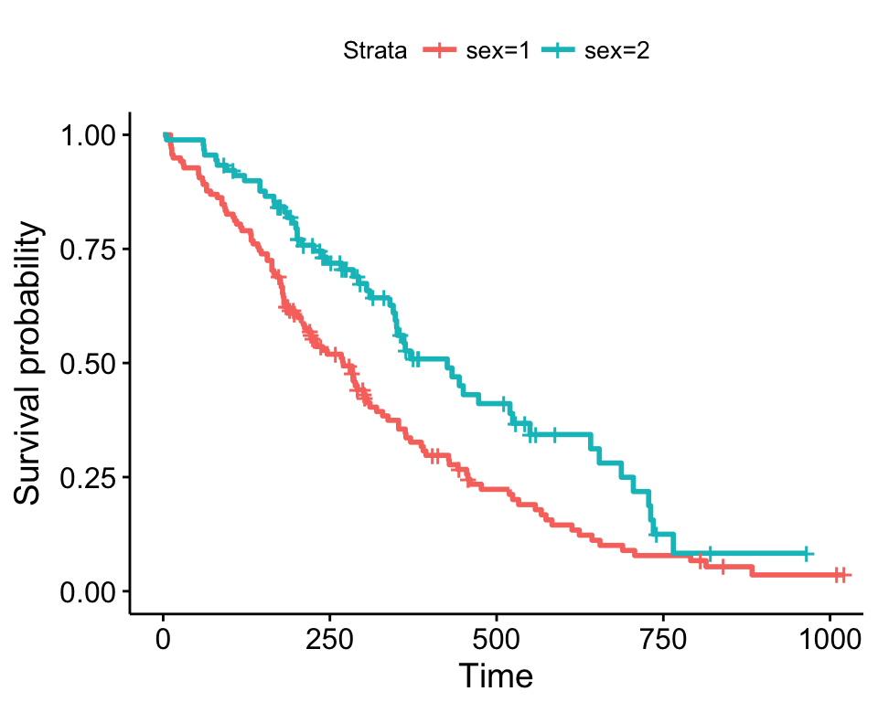
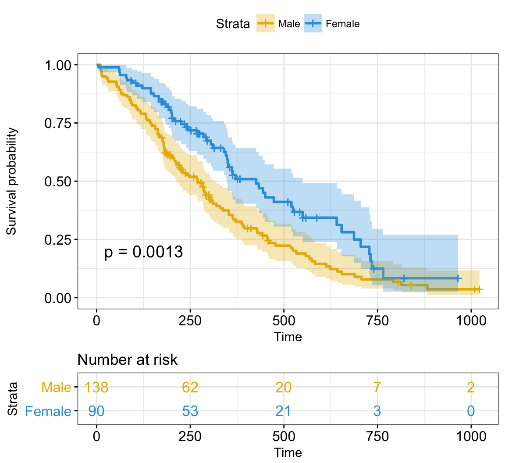
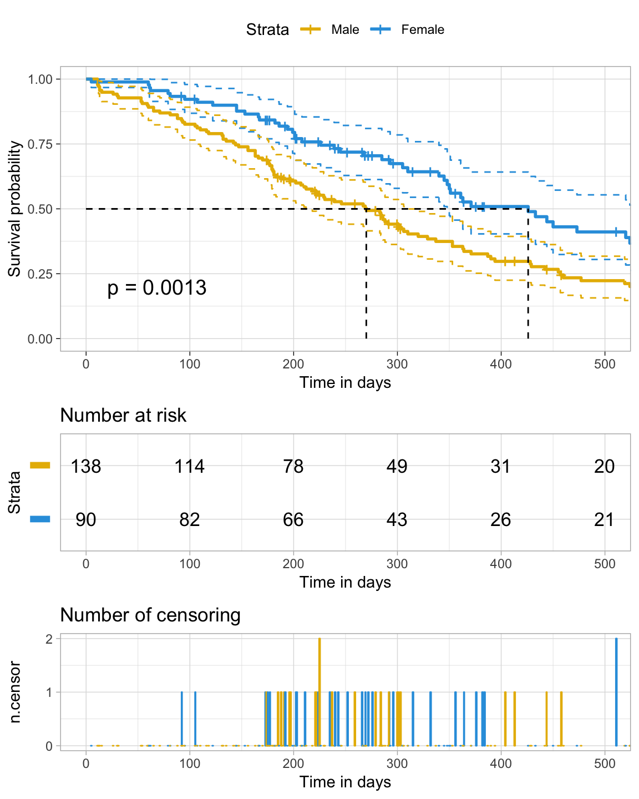
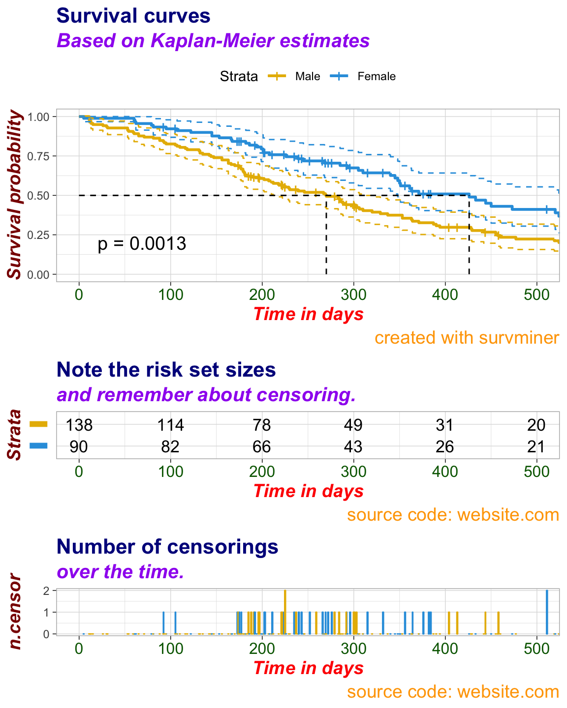

- survminer: Survival Analysis and Visualization
The survminer R package provides functions for facilitating survival analysis and visualization.
The main functions, in the package, are organized in different categories as follow.
Survival Curvesggsurvplot(): Draws survival curves with the ‘number at risk’ table, the cumulative number of events table and the cumulative number of censored subjects table.
arrange_ggsurvplots(): Arranges multiple ggsurvplots on the same page.
ggsurvevents(): Plots the distribution of event’s times.
surv_summary(): Summary of a survival curve. Compared to the default summary() function, surv_summary() creates a data frame containing a nice summary from survfit results.
surv_cutpoint(): Determines the optimal cutpoint for one or multiple continuous variables at once. Provides a value of a cutpoint that correspond to the most significant relation with survival.
pairwise_survdiff(): Multiple comparisons of survival curves. Calculate pairwise comparisons between group levels with corrections for multiple testing.
ggcoxzph(): Graphical test of proportional hazards. Displays a graph of the scaled Schoenfeld residuals, along with a smooth curve using ggplot2. Wrapper around plot.cox.zph().
ggcoxdiagnostics(): Displays diagnostics graphs presenting goodness of Cox Proportional Hazards Model fit.
ggcoxfunctional(): Displays graphs of continuous explanatory variable against martingale residuals of null cox proportional hazards model. It helps to properly choose the functional form of continuous variable in cox model.
ggforest(): Draws forest plot for CoxPH model.
ggcoxadjustedcurves(): Plots adjusted survival curves for coxph model.
- ggcompetingrisks(): Plots cumulative incidence curves for competing risks.
Find out more at http://www.sthda.com/english/rpkgs/survminer/, and check out the documentation and usage examples of each of the functions in survminer package.
Installation and loading
Install from CRAN as follow:
install.packages("survminer")Or, install the latest version from GitHub:
if(!require(devtools)) install.packages("devtools")
devtools::install_github("kassambara/survminer", build_vignettes = FALSE)Load survminer:
library("survminer")ggsurvplot: Drawing survival curves
Basic plots
ggsurvplot(fit, data = lung)
Censor shape can be changed as follow:
ggsurvplot(fit, data = lung, censor.shape="|", censor.size = 4)Customized survival curves
ggsurvplot(
fit,
data = lung,
size = 1, # change line size
palette =
c("#E7B800", "#2E9FDF"),# custom color palettes
conf.int = TRUE, # Add confidence interval
pval = TRUE, # Add p-value
risk.table = TRUE, # Add risk table
risk.table.col = "strata",# Risk table color by groups
legend.labs =
c("Male", "Female"), # Change legend labels
risk.table.height = 0.25, # Useful to change when you have multiple groups
ggtheme = theme_bw() # Change ggplot2 theme
)
Note that, additional arguments are available to customize the main title, axis labels, the font style, axis limits, legends and the number at risk table.
More customized survival curves
Focus on xlim and break.time.by parameters which do not change the calculations of estimates of survival surves. Also note risk.table.y.text.col = TRUE and risk.table.y.text = FALSE that provide bars instead of names in text annotations of the legend of risk table.
ggsurvplot(
fit, # survfit object with calculated statistics.
data = lung, # data used to fit survival curves.
risk.table = TRUE, # show risk table.
pval = TRUE, # show p-value of log-rank test.
conf.int = TRUE, # show confidence intervals for
# point estimates of survival curves.
xlim = c(0,500), # present narrower X axis, but not affect
# survival estimates.
xlab = "Time in days", # customize X axis label.
break.time.by = 100, # break X axis in time intervals by 500.
ggtheme = theme_light(), # customize plot and risk table with a theme.
risk.table.y.text.col = T, # colour risk table text annotations.
risk.table.y.text = FALSE # show bars instead of names in text annotations
# in legend of risk table
)
Uber customized survival curves
ggsurv <- ggsurvplot(
fit, # survfit object with calculated statistics.
data = lung, # data used to fit survival curves.
risk.table = TRUE, # show risk table.
pval = TRUE, # show p-value of log-rank test.
conf.int = TRUE, # show confidence intervals for
# point estimates of survival curves.
palette = c("#E7B800", "#2E9FDF"),
xlim = c(0,500), # present narrower X axis, but not affect
# survival estimates.
xlab = "Time in days", # customize X axis label.
break.time.by = 100, # break X axis in time intervals by 500.
ggtheme = theme_light(), # customize plot and risk table with a theme.
risk.table.y.text.col = T,# colour risk table text annotations.
risk.table.height = 0.25, # the height of the risk table
risk.table.y.text = FALSE,# show bars instead of names in text annotations
# in legend of risk table.
ncensor.plot = TRUE, # plot the number of censored subjects at time t
ncensor.plot.height = 0.25,
conf.int.style = "step", # customize style of confidence intervals
surv.median.line = "hv", # add the median survival pointer.
legend.labs =
c("Male", "Female") # change legend labels.
)
ggsurv
Uber platinum customized survival curves
# Changing Labels
# %%%%%%%%%%%%%%%%%%%%%%%%%%
# Labels for Survival Curves (plot)
ggsurv$plot <- ggsurv$plot + labs(
title = "Survival curves",
subtitle = "Based on Kaplan-Meier estimates",
caption = "created with survminer"
)
# Labels for Risk Table
ggsurv$table <- ggsurv$table + labs(
title = "Note the risk set sizes",
subtitle = "and remember about censoring.",
caption = "source code: website.com"
)
# Labels for ncensor plot
ggsurv$ncensor.plot <- ggsurv$ncensor.plot + labs(
title = "Number of censorings",
subtitle = "over the time.",
caption = "source code: website.com"
)
# Changing the font size, style and color
# %%%%%%%%%%%%%%%%%%%%%%%%%%%%%%%%%%%%%%%
# Applying the same font style to all the components of ggsurv:
# survival curves, risk table and censor part
ggsurv <- ggpar(
ggsurv,
font.title = c(16, "bold", "darkblue"),
font.subtitle = c(15, "bold.italic", "purple"),
font.caption = c(14, "plain", "orange"),
font.x = c(14, "bold.italic", "red"),
font.y = c(14, "bold.italic", "darkred"),
font.xtickslab = c(12, "plain", "darkgreen"),
legend = "top"
)
ggsurv
Blog posts
M. Kosiński. R-ADDICT January 2017. Comparing (Fancy) Survival Curves with Weighted Log-rank Tests
M. Kosiński. R-ADDICT January 2017. When You Went too Far with Survival Plots During the survminer 1st Anniversary
A. Kassambara. STHDA December 2016. Survival Analysis Basics: Curves and Logrank Tests
A. Kassambara. STHDA December 2016. Cox Proportional Hazards Model
A. Kassambara. STHDA December 2016. Cox Model Assumptions
M. Kosiński. R-ADDICT November 2016. Determine optimal cutpoints for numerical variables in survival plots
M. Kosiński. R-ADDICT May 2016. Survival plots have never been so informative
A. Kassambara. STHDA January 2016. survminer R package: Survival Data Analysis and Visualization.